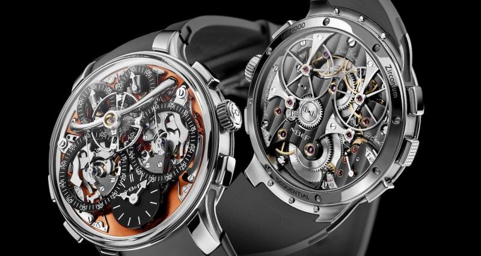
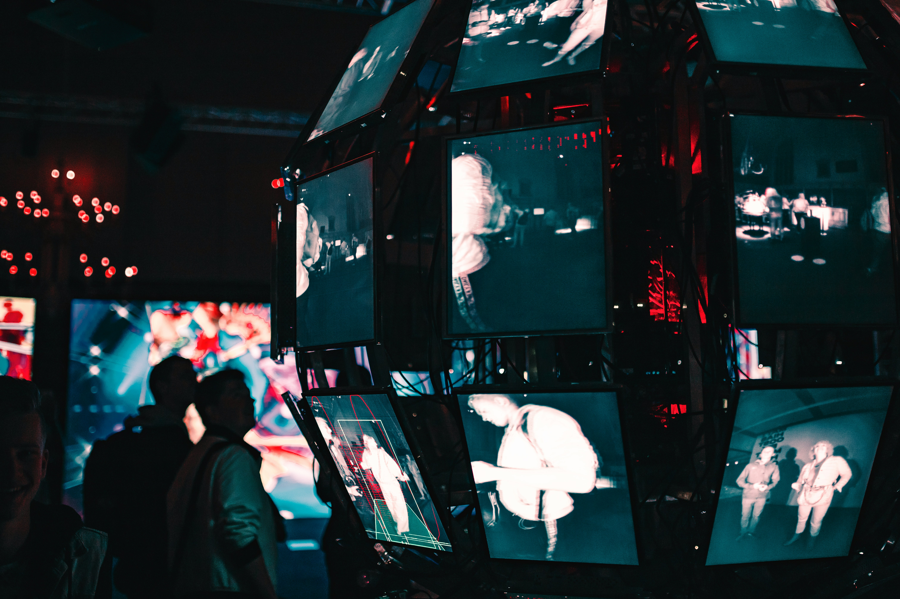

Intelligence Artificielle & Innovation
Automatisation et analyse intelligente des données du groupe.
IA

Automatisation et analyse intelligente des données du groupe.
IATraitement massif des données pour la prise de décision.
Big DataSites et applications web rapides, responsives et sécurisés.
WebProtection des systèmes et des informations sensibles.
Sécurité